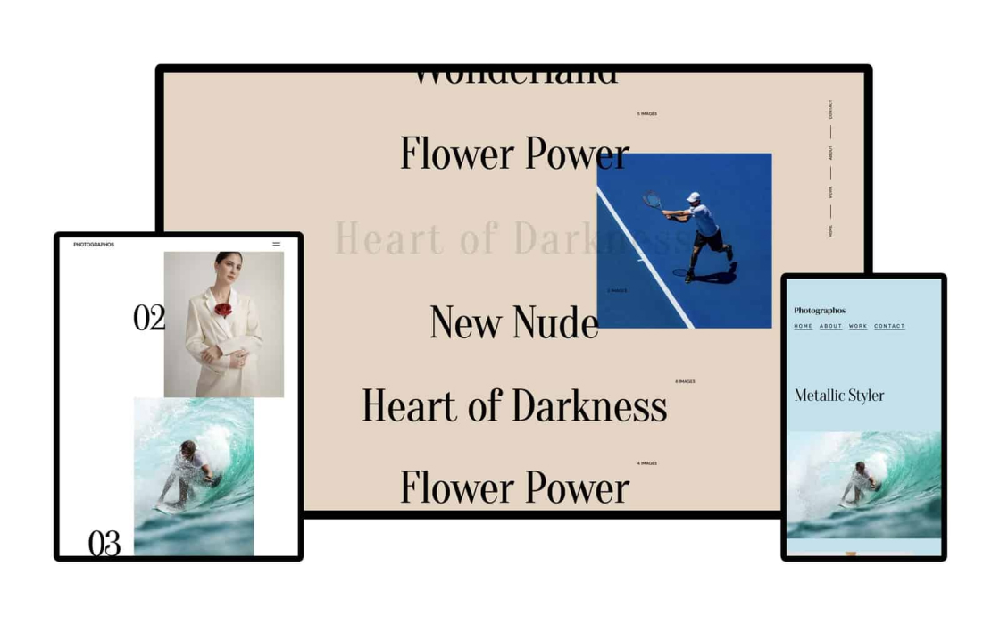

Buy template
MADE BY DESIGNERS, FOR DESIGNERS.
Present your photos in the best light with a custom portfolio – no coding required. Photographos is retina ready with transitions made for visual work.
Build a unique experience by mixing and matching components. Have full control of the colors, web fonts, images, and other styles that make your brand shine.
Design and develop simultaneously in an intuitive, visual canvas. Publish and instantly see your site live. No Photoshop, Sketch, or code needed.
With Photographos, you own every inch of the page. Use full-screen images or cover sliders to showcase your photos in crisp detail.
Create grid-based galleries to feature a project or series of images. Choose from a range of layouts and change margins, padding and more.
Display images in a carousel with the gallery slider. Customize styling or enable autoplay in just a few minutes.

We provide 17 sample layouts that you can use together or separately in your project. And you get 4 fully functional photographers templates. Take a look.
.jpg)
Demo #1
.jpg)
.jpg)
Demo #2
.jpg)